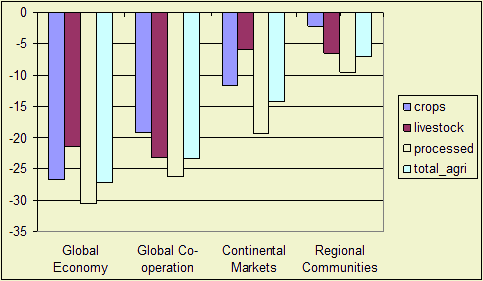

Highlights
Value added growth per employee in agriculture is partly dependent on the overall
level of economic growth. Therefore, it is highest in the Global Economy scenario and lowest
in the Regional Communities scenario.
In general the growth is higher in the developing and the EU12 countries than in the high income countries. The exception is in the Continental markets scenario where the EU and US build a transatlantic market. Here, the income per employee is much higher within this market than outside this market.

Figure 1 - Value added per employee in agriculture
in 2030 compared with 2001, % change
Policy effects
Reducing the CAP policies leads to a decrease of value added per employee and
the biofuel directive leads to an increase.
Most important drivers
Macro-economic growth and CAP\biofuel policies.
Used methodology
LEITAP model